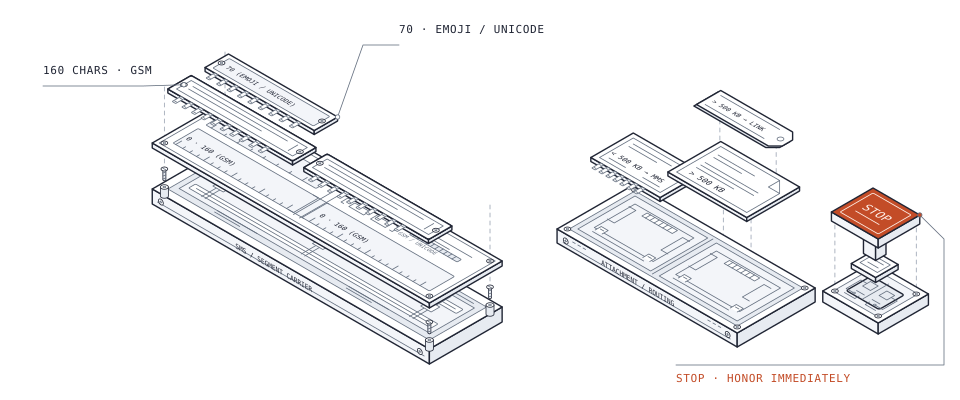

SMS limits and compliance
Plan message credits, sending volume, and consent before you send.

Message length
| Text | Characters per credit / segment |
|---|---|
| GSM text | 160 |
| Emoji or Unicode | 70 |
Each emoji counts as 2 characters. Include signatures when calculating the final message length.
Media and files
| Attachment | Delivery | Credits |
|---|---|---|
| Outbound <500 KB | MMS | 4 |
| Outbound >500 KB | Link to the file | 1 |
| Inbound image or video | Received media | 4 |
Allowed file types: PDF, DOC, XLS, CSV, TXT, JPG, GIF, PNG, MP3, MP4.
Public API: The send request has no media parameter.
These attachment rules describe messaging in Alive5. See
the send request fields.
Recipients and numbers
- Send to US and Canadian phone numbers, including mobile and VoIP numbers.
- Use E.164 format, including the country code, such as
+12025550123. - Each channel has one phone number in a one-to-one relationship. Channel membership grants users send and receive access.
- The sending number must be assigned to the channel used in the API request. Check Settings → Messaging → Phone Numbers & Accounts → Assign to channel.
Volume
Support guidance: at most 1,000 text segments per day per account. This is not an API rate limit.
| Broadcast setting | Default limit |
|---|---|
| Contacts per upload | 500 |
| Broadcasts in progress | One at a time |
Consent and opt-out
- Register for 10DLC. US local numbers need an approved campaign before outbound texts are delivered.
- Collect website consent. Use HTTPS and consent/privacy language. When the phone field is required, include an initially unchecked “Opt-in to receive texts?” checkbox.
- Honor opt-outs immediately. Process STOP, END, UNSUBSCRIBE, CANCEL, and QUIT regardless of case or punctuation. Send one final confirmation, then stop messaging.
- Use double opt-in in bot flows. Ask the recipient to reply
YES. Without that reply, they are not opted in to promotional messaging. - Keep consent records. Download the opt-in/out logs as CSV from Reporting → Logs → Opt In, Opt Out logs. For repeated events from one number, use the latest event.
Sample message: “Reply STOP to opt out. Reply HELP for help.”
Office numbers
SMS-enable an existing office landline or VoIP number while keeping your voice provider. Google Voice and mobile numbers are excluded from this hosting option. Ownership verification uses an automated call/PIN and a signed letter of authorization (LOA).
Switching voice providers? Tell the new provider not to
change the number’s SMS capabilities or NNID (Net Number ID). A voice
transfer can also move SMS hosting and disrupt messaging.